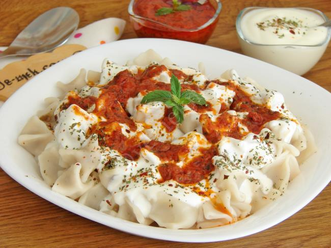

Home
Mantı

Açıklama
Mantı, Türk mutfağının en sevilen yemeklerinden biridir.
Genellikle yoğurt ve sos ile servis edilir.
Malzemeler
- 4 adet yufka
- 300 gram kıyma
- 1 adet soğan
- Tuz
- Karabiber
- Yeterince yoğurt
- Yeterince sos (domates veya biber sosu)
Adımlar
- Yufkaları açın ve iç harcı yerleştirin.
- Yufkaları kapatın ve mantı şekli verin.
- Bir tencerede su kaynatın ve mantıları haşlayın.
- Haşlanan mantıları süzün ve servis tabağına alın.
- Üzerine yoğurt ve sos ekleyerek sıcak servis yapın.